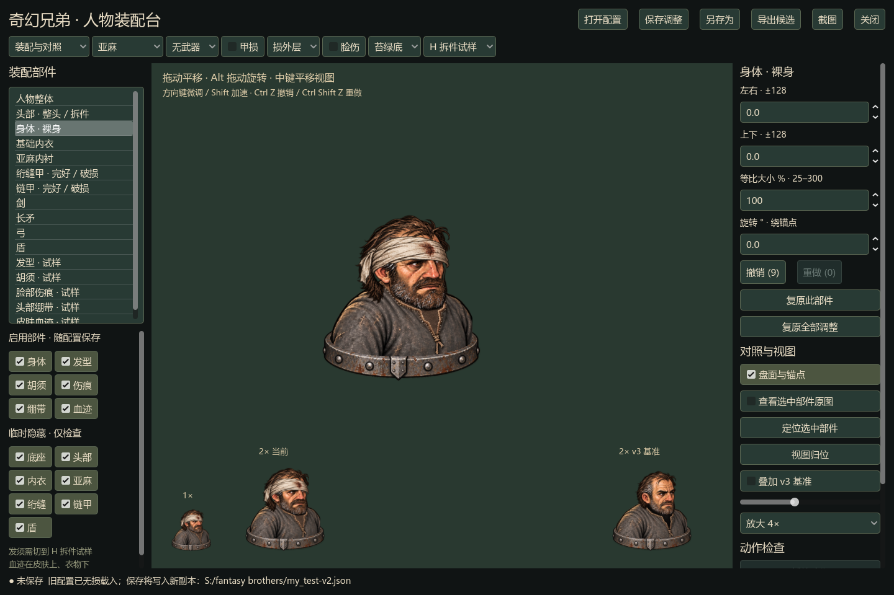

你的校准已保留。先验结构，再用工具开展人物资产重制。

±128 位移 · 25%–300% 缩放 · ±180° 旋转。Alt 拖动旋转，中键平移视图，可定位移远的部件。
身体、净面头、发型、胡须、伤痕、绷带、皮肤血迹。发须跟随头部，血迹在衣物下，启用与调整都能撤销。
原 my_test.json 保持不变。启动 Paperdoll.cmd 自动读取本机调整；旧版保存到 -v2.json 新副本。
这是一名人物的拆件验证，保留 H 原整头对照。工具可用于重制首套母版，尚不代表整个人物库已验收。
身体已从宽63缩为52；按最后提供的胸肩参考回调为轻侧身，并移除明显颈柱。两侧不再伸出衣服。先复评这一结构母版，再扩头型、头盔、衣甲与成套伤损。
本页全部画面来自实际 Windows 导出，页面本身不是装配编辑器。验证记录 · 生成记录 · 下载你的校准副本 · 下载拆件示例